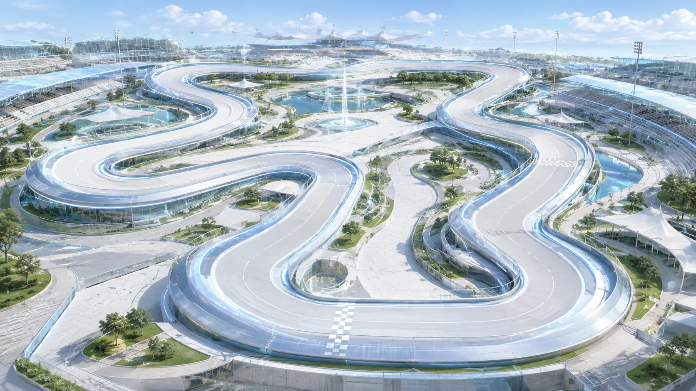
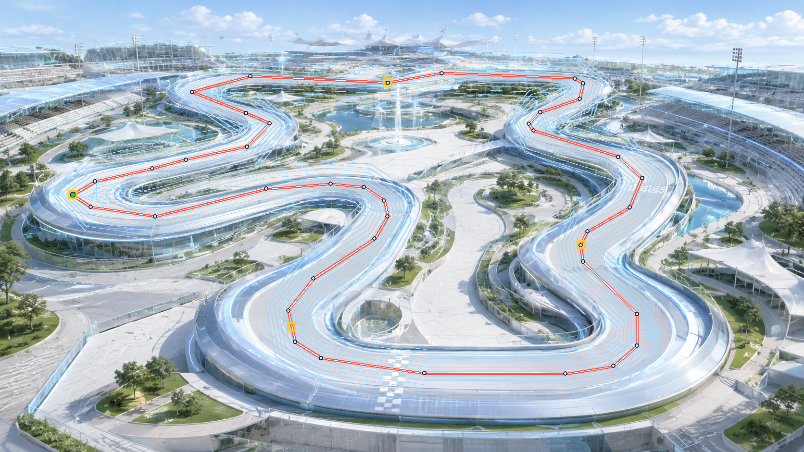

Calibrator Track Asset · real-explicit-closed-course


生成结果
- Calibrator 冻结导出：
calibrator-export.track.profile.json - runtime-normalized 版本：
calibrator-export.runtime-normalized.track.profile.json - 导出验证：
calibrator-export.validation.json - active candidate route：
/jumbotron/candidate-assets/real-explicit-closed-course/background.webp - Calibrator 导入方式：打开
/jumbotron/calibrator，使用 active second-track candidate 导入按钮。
边界
- 这是 candidate asset，不是 confirmed asset。
- 背景图只负责视觉；runtime 定位使用
centerline、lane offsets、checkpoints。 - 正式替换默认 Race Live View 前仍需人工复核并确认。